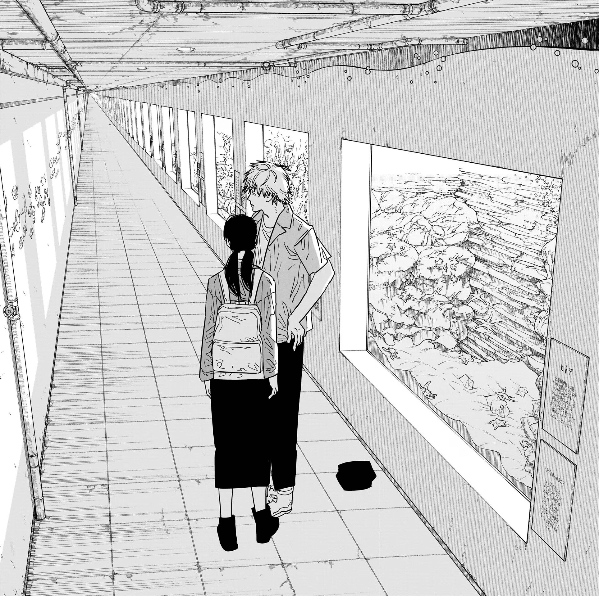

Happy birthday Sara, you're friction over dopamine. I feel that the human experience with you gives me a condition that overpowers any form of vice. I could feel every bit of tissue in my body relax when I'm with you. This website is dedicated for you, I feel that you're every bit as worthy to have the digital panorama tilting under the palms of your sweet presence. The room sometimes feel too stagnant, yet whenever I suddenly find myself under your calls and messeges, I see a kaleidoscope, colors that flow through me, something where I don't have to find myself crying in. Last year was so rough, I felt myself burderned with living everyday, it's the slow-burnt feeling of pain that tests my patience in staying, swallowing each bit of pain that I was able to conjure in my life. Then you called, and I remember those nights where it just fades away, I don't know what is it about you, but you do it so effortlessly. I pray so much that one day you won't be so far, so I could finally see you as much as I want, where we can stand throughout the concrete floors of the uknown, I have no idea where we'd go, but I'd want to find out with you. It'll be a dream to reach those days, but for now, I'll be missing you everyday, waiting for your call and message...

Could this be us? I've been lonely for so long, yet I realize that loneliness made me closer to you. It taught me where my value stems, and why uniqueness comes in few people. There are billions of people in the world, and one among those billions is you. There's no-one but you that makes me want to go to dimly-lit aquarium with blue haze, with the only separating color in the room being you. I said this many times before, but I'll say it again, I love you. Happy birthday, Sara.

Because the season I like is a short thing. It melted away without me noticing. Alone in this moving scenery, I stand still and think of you. Lamp - 恋人へ (For Lovers)